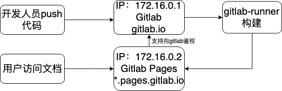

Gitlab pages原理解析
gitlab pages是gitlab自带的一个静态页面托管工具，类似于GitHub pages，与Github pages 最大区别是 gitlab pages是支持私有化托管的，同时gitlab pages提供了权限管理和自动化构建的功能。
选型分析
选择gitlab pages 主要对比的工具是wiki和github pages ，我们原有的文档主要是由swagger 和gitbook组组成，所以需要综合考虑迁移成本和新工具的适应性，主要对比如下：
| 产品名称 | 权限管理 | 自定义域名 | 无缝迁移 |
|---|---|---|---|
| dokuwiki | 文档权限丰富 | 不支持对不同文档生成不同域名 | 所有文档需要重新校对成wiki的格式 |
| gitlab pages | git权限丰富，文档权限简单 | 支持生成自定义域名 | 无需修改文档格式，只需要导入新的平台当中 |
根据如上几点， gitlab pages的优点非常明显了，所以我们对文档的整体思路如下：
- code 和 doc分离
- doc 优先托管至 gitlab
- 项目相关的文档使用wiki，公共文档以及原有的文档使用pages功能
Gitlab pages 原理图

我们部署的时候，gitlab和gitlab pages使用一台主机进行部署，开发人员通过本地工具进行编辑文档，然后使用git进行版本管理。开发人员在提交代码后，会自动触发gitlab-runner对代码进行构建，将markdown语法或者是其他语法转换成html。
而用户则在另外一侧通过生成的域名，格式如test.pages.gitlab.io 进行访问，或者将其他域名通过CNAME指向生成的域名。
需要说明的是，此时一台主机需要两个IP地址，一个用来监听gitlab自身的服务，另外一个则用来监听gitlab pages的服务。
进行域名解析则会得到以下结果：
1 | *.example.io. 1800 IN A 172.16.0.2 |
Gitlab pages 配置HTTPS 证书
Gitlab pages 需要一个泛域名证书来支持，泛域名证书需要注意的是，必须使用一个*.pages.gitlab.io的证书而不是*.gitlab.io的证书，泛域名证书只能适用于同级别域名，不能跨级别
配置如下：
1 | gitlab_pages['external_https'] = ['172.17.0.2:443'] |
需要将gitlab pages 的https 协议监听在次要IP上面，并配置上证书，就可以在Gitlab pages的配置页面添加自定义域名时候支持https了，并且可以在页面上设置是否强制跳转https